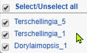
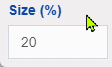
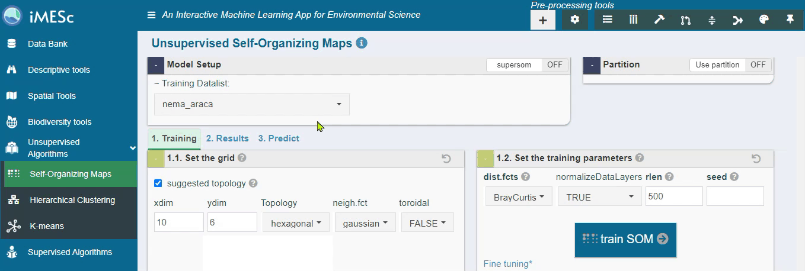
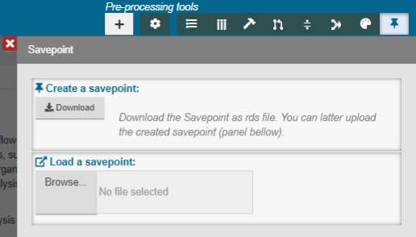

iMESchelp!
Introduction
Welcome to the iMESchelp, your comprehensive guide to use iMESc:an interactive machine learning app designed to analyze environmental data. iMESc is a shiny-based application that allows the performance of end-to-end machine learning workflows. It provides a wide range of resources to meet the various needs of environmental scientist, making it a versatile tool for data analysis.
This manual is organized into the following sections:
Setup: Step-by-step instructions to run iMESc.
Layout: The dashboard organization.
Widgets: The interactive widgets used in iMESc, such as buttons, dropdowns, and checkboxes, which enable seamless interactions with the app.
Datalist: Exploring the core concept of Datalists and their attributes.
Essentials of Building a Workflow in iMESc: Generic workflow steps commonly encountered while using iMESc.
Pre-processing Tools: In-depth coverage of the tools available for pre-processing data, including Datalist creation and data transformation.
Sidebar-menu: Details about the modules, analyses and algorithms, parametrization, and results.
Packages & Functions: Details about the main R packages and functions used in iMESc, along with their respective versions and analytical tasks.
1 Setup
Once installed, open the R studio;
Install shiny package if it is not already installed;
Run the code below.
When you use the iMESc app for the first time, it will automatically install all the necessary packages, which may take several minutes to complete. However, once the first installation is finished, subsequent access of the app will be much faster. If the required packages are not already loaded, they typically take several seconds to load. On the other hand, if the packages are already loaded, iMESc will start almost instantly.
2 Layout
iMESc is designed with a dashboard layout, consisting of three main sections:
Pre-processing tools on the top-left containing widgets for Datalist options and pre-processing data.
Sidebar-menu on the left-hand side containing menu buttons.
The Main panel for viewing the analytical tasks.
Upon selecting a menu button, users will seamlessly navigate to a sub-screen housing the selected module. Each module features a header equipped with interactive widgets, along with multiple tab panels that support various functionalities.
To ensure an optimal display of iMESc content, we strongly recommend a minimum landscape resolution of 1377 x 768 pixels. Adhering to this resolution, it will guarantee an enhanced user experience and proper visualization of all elements on the screen.
3 Widgets
The app is built using widgets: web elements that users interact with. The standard iMESc widgets are:
| Widgets | Task | |
|---|---|---|
| Button | Performs an action when clicked | |
| Picker/Dropdown | Allows the user to select only one of a predefined set of mutually exclusive options | |
| Checkbox | Interactive box that can be toggled by the user to indicate an affirmative or negative choice | |
| Checkbox group | A group of check boxes |  |
| Radiobuttons | Allows the user to choose only one of a predefined set of mutually exclusive options | |
| File | A file upload control wizard | |
| Numeric | A field to enter numbers |  |
| Text | A field to enter text |
4 Datalist
iMESc manages data through Datalists Fig S4.1, which can include sheets and shape-files (user-provided). The sheets are internally treated as data.frame objects in R, where rows represent observations and columns represent variables. Matching observations among these attributes, regardless of the Datalists they come from, is achieved based on the row names, ensuring data consistency. To ensure proper handling of the sheets-attributes, you must provide a unique ID and place it in the first column when uploading the data. iMESc automatically removes this first column and adds it as the row names of the respective attribute. Decimals in iMESc are represented with dots (e.g. 1/2 =0.5), check it before uploading a file.
Required
| Numeric-Attribute | Numerical data with continuous or discrete variables. |
Optional
| Factor-Attribute: | Categorical data. If not provided, iMESc automatically generates this attribute as a sheet with a single column containing the IDs of the Numeric-Attribute. |
| Coords-Attribute | Geographical coordinates (Longitude, Latitude) represented in decimal degrees, used for spatialization of data within the Spatial Tools. |
| Base-Shape-Attribute: | A polygon shape to clip or interpolate spatialized data for map generation. |
| Layer-Shape-Attribute: | Adds extra shapes for superimposition on maps. |
| Extra-Shape Attribute: | Users can add other shapes as Extra-Shape-Attribute to further customize their maps. |
Furthermore, Datalists have the capacity to store models that have been trained using the iMESc, permitting users to integrate and manage predictive models along with their data sets. To access all the available analyses in iMESc, you need to create a Datalist by either uploading your own data or using the example data provided. For guidance on uploading sheets and the required attribute formats, as well as how to utilize the example Datalists, please refer to the “Creating a Datalist” section.
5 Main Analyses
The table provided below serves as a convenient reference for the main analyses utilized in iMESc. It displays their locations in the sidebar menu, along with their abbreviations and corresponding packages. For more comprehensive information about each analysis, you can refer to their respective sections in this manual.
| Side Bar menu | Analyses | Abbreviation | Package | Author |
|---|---|---|---|---|
| Descriptive tools | Pearson’s correlation | - | base | Pearson (1895) |
| Kendell’s correlation | - | base | Kendall (1938) | |
| Spearman’s correlation | - | base | Spearman (1904) | |
| Principal Component Analysis | PCA | base | Pearson (1901) | |
| Nonmetric Multidimensional Scaling | MDS | vegan | Legendre & Anderson (1999) | |
| Redundancy Analyses | RDA | vegan | Blanchet et al. (2008) | |
| Piecewise Redundancy Analyses | pwRDA | segRDA | Vieira (2019) | |
| Spatial tools | Krigging | |||
| Inverse Distance Weighting | idw | - | Shepard (1968) | |
| K-Nearest neighbor | KNN | stats | Fix & Hodges (1951) | |
| Support Vector Machine with Radial Basis Function Kernel | svmRadial | kernlab | Karatzoglou et.al (2004) | |
| Gaussian Process with Radial Basis Function Kernel | gaussprRadial | kernlab | Karatzoglou et.al (2004) | |
| Support Vector Machine with Radial Basis Function Kernel and Cost Parameter Optimization | svmRadialCost | kernlab | Karatzoglou et.al (2004) | |
| Unsupervised Algorithms | Sel-Organizing Maps | SOM | kohonen | Kohonen (1982) |
| Hierarchical Clustering | HC | factoextra | Sneath (1957) | |
| Random Forest | rf | randomForest | Breiman (2001) | |
Supervised Algorithms |
Stochastic gradient boosting | gbm | gbm | Friedman (2001) |
| Conditional Inference Random Forest | cforest | party | Hothorn et al. (2006) | |
| Recursive Partitioning and Regression Trees | rpart | rpart | Breiman et al. (1984) | |
| Tree models from Genetic Algorithms | evtree | evtree | Grubinger et al. (2014) | |
| Naive Bayes | nb | klaR | Duda et al. (2012) | |
| K-Nearest Neighbors | knn | base | Fix & Hodges (1951) | |
| Self-Organizing Maps | xyf | kohonen | Shepard (1962) | |
| Generalized Linear Model | glm | base | Nelder & Wedderburn (1972) | |
| Gaussian Process with Radial Basis Function Kernel | gaussprRadial | kernlab | Karatzoglou et.al (2004) | |
| Support Vector Machine with Linear Kernel | svmLinear | kernlab | Karatzoglou et.al (2004) | |
| Support Vector Machine with Radial Basis Function Kernel | svmRadial | kernlab | Karatzoglou et.al (2004) | |
| Support Vector Machine with Radial Basis Function Kernel and Cost Parameter Optimization | svmRadialCost | kernlab | Karatzoglou et.al (2004) | |
| Stacked AutoEncoder Deep Neural Network | dnn | deepnet | Vincent et al. (2010) | |
| Model Averaged Neural Network | avNNet | nnet | Ripley (1996) | |
| Neural Network | nnet | nnet | Ripley (1996) | |
| Neural Networks with Feature Extraction | pcaNNet | nnet | Ripley (1996) | |
| Monotone Multi-Layer Perceptron Neural Network | monmlp | monmlp | Lang (2005) | |
| Feature Selection using randomForest Genetic Algorithm | rfGA | caret | Kuhn (2008) |
6 Essentials of Building a Workflow in iMESc
In this section, we will cover the four recurring steps to construct a workflow within iMESc:
6.1 Create Datalists Based on Model Specifications
| Use pre-processing tools to Create Datalists with their associated attributes based on the chosen analytical method. | |
| For unsupervised methods, only Numeric-Attribute (X) is needed. |  |
| For classification models, both Numeric-Attribute (X) and Factor-Attribute (Y) are needed. X and Y can be from the same or different Datalists. |  |
| For regression models, X and Y are both Numeric-Attributes from different Datalists. |  |
6.2 Pre-processing
| Use pre-processing tools to handle missing values (Data imputation tool). |  |
| Transform the data as needed (e.g., scaling, centering, log transformations), especially for distance-based methods (e.g., PCA, SOM). | |
| Partition the Y data between training and testing for supervised machine learning methods. This action creates a column in the Factor Attribute indicating the partitioning. |  |
6.3 Save changes and models
Saving data changes or trained models is a recurring step throughout iMESc. Whenever saving is required, iMESc will indicate this with a flashing-blue disc button .
Saving data changes can be done as new Datalists or overwrite existing ones. Factor, Coords, and Shapes attributes are automatically transferred to the new Datalist. Models previously saved in a Datalist are not transferred.
Trained models are saved within the Datalist used as the predictor (X). After training a model, users have the option to save it as a new model or overwrite an existing one. This action creates a new attribute within the Datalist (e.g., RF-Attribute for Random Forest models).
6.4 Loading and downloading a savepoint

Download a save-point:
Open the pre-processing tools in iMESc.
Click the “Download” button in the “Create a savepoint” section.
The save-point file (.rds) will be downloaded to the computer, capturing your workspace, including all the Datalists and associated models.
Restore a save-point:
Go to the pre-processing tools.
In the “Load a savepoint” section, use “Browse” to upload the save-point file from your computer.
Click “Upload” or “Load” to restore your workspace to that point.
Save-points are incredibly useful for preserving your analysis progress and results. By downloading a save-point, you can conveniently store your work, and later, by uploading it, you can seamlessly continue your analysis from where you left off. This feature ensures that your work remains intact, even if you close the session or access iMESc from a different device.
Using save-points streamlines your workflow and enhances your overall experience with iMESc, providing a reliable way to manage and preserve your analysis outputs and data for future use.
6.4.1 Extracting the Savepoint Results by R Code:
You can extract specific results and attributes from the Savepoint using R code. The iMESc is not required here. To do this, use the following steps:
# Reading the Savepoint
savepoint <- readRDS("savepoint.rds")
savepoint$saved_data # To access all saved Datalists
names(savepoint$saved_data) # To access the names of the saved Datalists
# Accessing a specific Datalist named "datalist_name"
datalist_name <- savepoint$saved_data[['datalist_name']]
datalist_name
# Accessing specific attributes within the Datalist
attr(datalist_name, "factors") # To access the Factor-Attribute
attr(datalist_name, "coords") # To access the Coords-Attribute
attr(datalist_name, "base_shape") # To access the Base-Shape-Attribute
attr(datalist_name, "layer_shape") # To access the Layer-Shape-Attribute
attr(datalist_name, "extra_shape") # To access the Extra-Shapes-Attribute
# To extract saved models
attr(datalist_name, "som") # To access all SOM models saved in the Datalist
attr(datalist_name, "som")[["model_name"]] # To access a saved SOM model named 'model_name'
# To access other models, replace "som" with the corresponding model name:
# 'kmeans' (k-Means), 'nb' (Naive-Bayes), 'svm' (Support-Machine Vector), 'knn'(k-nearest neighbor), 'rf' (Random Forest),
# 'sgboost' (stochastic gradient boosting), 'xyf' (supervised som).Note: Ensure that you specify the correct path and filename of your
save-point file in the readRDS function.
Modify “datalist_name” and “model_name” in the R code to access specific
Datalists and saved models, respectively.
7 Pre-processing Tools
The Pre-processing Tools comprise a suite of functionalities for manipulating and preparing Datalists. These tools assist in refining the data, handling missing values, and generating custom palettes for graphical outputs. Below are the details of each tool:
7.1 Create a Datalist
To begin working with iMESc, you need to create a Datalist, which serves as the foundation for all analytical tasks. Click on “Create Datalist button” to open a modal dialog for Datalist creation. All analytical tasks in iMESc will require a Datalist, which can be uploaded by the user or generated using example data.
7.1.1 Upload
Name the Datalist: Use the text widget to provide a name for the Datalist.
Numeric-Attribute: Upload a .csv or .xlsx file containing the numeric variables. This file is mandatory and should include observations as rows and variables as columns.The first row must contain the variable headings, and the first column should have observation labels. Columns containing characters (text or mixed numeric and non-numeric values) will be automatically transferred to the Factor-Attribute.
Factor-Attribute: Upload a .csv or .xlsx file containing categorical variables. This file should have observations as rows and categorical variables as columns. The first row must contain variable headings, and the first column should have observation labels. If the Factor-Attribute is not uploaded, the observation IDs will be used automatically. This attribute is crucial for labeling, grouping, and visualizing results based on factor levels. It can be replaced at any time with a new one using the “Replace Factor-Attribute” button
Coords-Attribute: Upload a .csv or .xlsx file containing geographical coordinates. This file is optional for creating a Datalist but required for generating maps. The first column should contain the observation labels, the second column Longitude values, and the third column Latitude values (both in decimal degrees). The first row must contain the coordinate headings.
Base-Shape: Upload a single R file containing the polygon shape, such as an oceanic basin outline, to be used primarily with ggplot2 for map generation. This optional file provides the foundational geographical context for your visualizations. It can be generated using the SHP toolbox in the pre-processing tools, which converts shapefiles (.shp, .shx, and .dbf files) into an R file suitable for use as a base layer in ggplot2
Layer-Shape: Upload a single R file containing an additional shape layer, such as a continent shape, to be used primarily with ggplot2 for map generation. This optional file can also be created using the SHP toolbox available in the pre-processing tools.
Best practices when uploading your sheet
Prepare your data: Use the first row as column headers and the first column as observation labels.
Ensure each label is filled with unique information, removing any duplicated names.
Check for empty cells in the observation label column.
Ensure that the column names are unique; duplicated names are not allowed.
Avoid using cells with blank spaces or special symbols.
Avoid beginning variable names with a number.
Note that R is case-sensitive, so “name” is different from “Name” or “NAME.”
Avoid blank rows and/or columns in your data.
Replace missing values with NA (not available).
7.1.2 Use Example Data
This option allows users to explore the example data available in iMESc . After clicking on “Create a Datalist,” select the “Use example data” radio-button to proceed with Datalist insertion. This action will insert two Datalists from Araçá Bay, located on the southeastern coast of Brazil:
envi_araca: Contains 141 samples with 9 environmental variables.
nema_araca: Contains 141 samples with 194 free-living marine nematode species (southeastern coast of Brazil).
Both Datalists comprise five attributes: Numeric, Factor, Coords-Attribute, Base-Shape, and Layer-Shape. Studies that explored these data area include Corte et al., 2017, Checon et al., 2018 and Vieira et al., 2021.

7.2 Options
This drop-down menu offers the user a range of tools for editing Datalists.
7.2.1 Rename Datalist
Change the name of a selected Datalis.
7.2.2 Merge Datalists
Combine two or more Datalists by columns or rows. This action affects both Numeric and Factor-Attribute data. When merging by rows, it also combines associated Coords-Attribute (if any). When merging by columns, there is an option to fill missing columns with NA, or restrict the Datalists to common columns.
Please note that saved models in one of the Datalists are not transferred to the merged Datalist.
7.2.3 Exchange Factor/Variables
The “Exchange Factors/Variables” functionality in iMESc allows you to convert or transfer data between numeric and factor formats. This powerful tool provides flexibility in handling your data and enables transitions between different data types.
From Datalist Selector: Select the source Datalist from which you want to exchange data.
From Attribute Selector: Within the selected Datalist, choose between the Numeric or Factor Attribute that you wish to convert or transfer.
To Datalist Selector: Select the target Datalist where you want to transfer or convert the data.
To Attribute Selector: Within the target Datalist, specify whether you want to convert the data to Numeric or Factor format.
From Numeric…
To Numeric: This option allows you to copy or transfer the selected numeric variables from the source Datalist to the target Datalist while preserving their numeric format.
To Factor: Convert the selected numeric variables to factors. The default is to transform each unique numeric value into a new level of the factor. You can use the “cut” option to categorize the variables into specified bins or levels. The initial guess of bins can be determined by three methods: Surges, Scott’s, or Freedman-Diaconis. Additionally, you can manually define the number of bins and also edit the names and order of the factor levels.
From Factor…
To Factor: With this option, you can copy or transfer the selected factors from the source Datalist to the target Datalist, maintaining their original factor format.
To Numeric: This conversion allows you to convert the selected factors to numeric data before copying or moving them. You have two types of conversions available:
Binary: For each factor level, a single binary column is created, where 1 indicates the class of that observation.
Integer: A single column is created, representing the numeric (integer) representation of the factor levels (values).
7.2.4 Replace Attributes
The “Replace Attribute” option allows users to update existing Attributes within a Datalist by replacing them with new data from a CSV file.
7.2.5 Edit Datalist Columns
Modify the names of columns for both Numeric-Attributes and Factor-Attributes, and remove columns.
7.2.6 Edit Model names
Allows you to edit the names of saved models.
7.2.7 Transpose a Datalist
Rotate a Datalist (Numeric and Factor) from rows to columns. If a Coords-Attribute is associated with the Datalist, it will be removed.
7.2.8 SHP toolbox
This toolbox allows the creation of Base-Shapes, Layer-Shapes and Extra shapes.
Targets & Upload
- Upload shape files* at once
- Select the Target Shape-Attribute: Base-Shape, Layer-Shape or Extra-shape.
- Select the Target Datalist.
- Upload the shape files at once
shape files*
Shapefiles are a simple, nontopological format for storing geometric location and attribute information of geographic features. The shapefile format defines the geometry and attributes of geographically referenced features in three or more files with specific file extensions that should be stored in the same project. It requires at least three files:
.shp: The main file that stores the feature geometry.
.shx: The index file that stores the index of the feature geometry.
.dbf: The dBASE table that stores the attribute information of features.
There is a one-to-one relationship between geometry and attributes, which is based on record number. Attribute records in the dBASE file must be in the same order as records in the main file.
Each file must have the same prefix, for example: basin.shp, basin.shx, and basin.dbf
Filter & Crop
A setup box that appears after uploading and reading the shape files. Options include filtering specific features, cropping to an existing shape attribute, or manual cropping.
Create & Save
A setup box displayed after uploading and reading the shape files. Use it to save the new shape in the target Datalist.
7.2.9 Run Script
Execute custom R scripts using user-created Datalists within iMESc.
Saved Datalists are accessible from the saved_data
object.
Example:
names(saved_data) #Lists the names of the Datalists.
attr(saved_data[["nema_araca"]],"factors") #acess the Factor-Attribute, where 'nema_araca' is the Datalist name
attr(saved_data[["nema_araca"]],"coords") #acess the Coords-AttributeModify permanently iMESc objects:
names(vals$saved_data)[1] <- "new name" #Modifies the name of the first Datalist.7.2.10 Datalist Manager
Manage saved Datalists and their attributes. The manager displays the size of each Datalist, and options for deleting attributes.
7.2.11 Delete Datalists
Remove a Datalist entirely.
7.3 Filter observations
This tool allows manipulating numeric attributes by filtering observations based on certain criteria. The available options are:
Individual row selection: Manually select observations using Datalist IDs.
Na.omit: Remove all rows with any empty (NAs) cells.
Remove Zero Variance: Remove rows with near-zero variance.
Match IDs with Datalist: Constrain the target Datalist to observations (IDs) from another Datalist.
Filter by Factors: Filter observations using a tree structured by the levels of the Factor-Attribute. You can click on the nodes to expand and select the factor levels. This function is available for factors with fewer than 100 levels.
7.4 Filter variables
This tool allows manipulating the Numeric-Attribute by filtering variables. The available options for value-based removal are:
- Individual Selection: Manually select specific variables (columns) to keep or remove from the Datalist.
- Value-based removal: Remove numeric variables
contributing less than a specified percentage of the total sum across
all observations. The methods for this option are:
- Abund<: Remove variables with a total value less than x-percent of the total sum across all observations. This is useful to exclude variables with low overall contribution.
- Freq<: Remove variables that occur in less than x-percent of the total number of observations. This is helpful when you want to exclude rarely occurring variables.
- Singletons: Remove variables that occur only once in the dataset. This option is relevant for counting data and helps eliminate variables with no meaningful variation.
- Correlation-based removal: This option uses the
findCorrelationfunction from the ‘caret’ package. It considers the absolute values of pair-wise correlations between variables. If two variables have a high correlation, the function looks at the mean absolute correlation of each variable, considering the whole data, and removes the variable with the largest mean absolute correlation. Theexactargument is set to TRUE, meaning that the function re-evaluates the average correlations at each step. - Remove Zero Variance: Revove columns with zero variance.
- Remove near Zero Variance: This option uses the
nearZeroVarfunction from thecaretpackage. It identifies and removes near zero variance predictors. Predictors with near-zero variance have either zero variance (only one unique value) or very few unique values relative to the number of samples, with a large frequency ratio between the most common and second most common values. Removing such predictors can help eliminate features that do not contribute much information.
7.5 Transformations
The “Transformations” tool enables preprocessing of the Numeric-Attribute using various transformation methods.
7.5.1 Transformation
Provides a wide range of transformation options:
None: No Transformation. Select this option if you do not want to apply any transformation to the Numeric-Attribute.
Log2: Logarithmic base 2 transformation as suggested by Anderson et al. (2006). It follows the formula log_b (x) + 1 for x > 0, where ‘b’ is the base of the logarithm. Zeros are left as zeros. Higher bases give less weight to quantities and more to presences, and logbase = Inf gives the presence/absence scaling. Note that this is not log(x+1).
Log10: Logarithmic base 10 transformation as suggested by Anderson et al. (2006). It follows the formula log_b (x) + 1 for x > 0, where ‘b’ is the base of the logarithm. Zeros are left as zeros. Higher bases give less weight to quantities and more to presences, and logbase = Inf gives the presence/absence scaling. Note that this is not log(x+1).
Total: Divide by the line (observation) total. This transformation scales the values based on the total sum of each observation.
Max: Divide by the column (variable) maximum. This transformation scales the values based on the maximum value of each variable.
Frequency: Divide by the column (variable) total and multiply by the number of non-zero items, so that the average of non-zero entries is one. This transformation scales the values based on the frequency of occurrence.
Range: Standardize column (variable) values into the range 0 … 1. If all values are constant, they will be transformed to 0. This transformation brings the values to a common scale.
Pa: Scale x to presence/absence scale (0/1). This transformation converts the values to binary (0 for absence, 1 for presence).
Chi.square: Divide by row sums and square root of column sums and adjust for the square root of the matrix total. This transformation is relevant for specific statistical analyses.
Hellinger: Square root of method = total. This transformation is used for certain distance calculations.
Sqrt2: Square root transformation. This transformation takes the square root of each value.
Sqrt4: 4th root transformation. This transformation takes the 4th root of each value.
Log2(x+1): Logarithmic base 2 transformation (x+1). This is a variant of the log2 transformation that adds 1 before taking the logarithm.
Log10(x+1): Logarithmic base 10 transformation (x+1). This is a variant of the log10 transformation that adds 1 before taking the logarithm.
BoxCox: Designed for non-negative responses. Boxcox transforms non-normally distributed data to a set of data that has an approximately normal distribution. The Box-Cox transformation is a family of power transformations.
Yeojohson: Like the Box-Cox model but can accommodate predictors with zero and/or negative values. This is another family of power transformations.
ExpoTrans: Exponential transformation. This transformation applies the exponential function to each value.
7.5.2 Scale and Centering
This tool uses the function scale from
R base for scaling and centering operations. You have the following
options:
Scale: If checked, scaling is done by dividing the (centered) columns of “x” either by their standard deviations (if center is TRUE) or by the root mean square (if center is FALSE).
Center: If checked, centering is done by subtracting the column means (omitting NAs) of “x” from their corresponding columns
7.6 Data imputation
This tool provides methods for completing missing values with values
estimated from the observed data. It is available only for Datalists
that contain missing data either in the Numeric-Attribute or in the
Factor-Attribute. The function preProcess
from the caret package is used for
imputation. To impute missing values, follow these steps:
Choose the Target-Attribute.
Pick a Method (described below).
Click the blue “Flash” button. The “Save Changes” dialog will automatically pop-up.
Save the Datalist with imputed values as a new Datalist or replace an existing one.
Methods for imputation:
Knn
(caret): k-nearest neighbor imputation is only available for the Numeric-Attribute. It is c arried out by finding the k closest samples (Euclidean distance) in the dataset. This method automatically centers and scales your data.Bagimpute
(caret): Only available for the Numeric-Attribute. Imputation via bagging fits a bagged tree model for each predictor (as a function of all the others). This method is simple, more accurate, and accepts missing values, but it has a much higher computational cost.MedianImpute
(caret): Only available for the Numeric-Attribute. Imputation via medians takes the median of each predictor in the training set and uses them to fill missing values. This method is simple, fast, and accepts missing values but treats each predictor independently, which may lead to inaccuracies.pmm
(mice): Predictive mean matching (PMM) is available for both Numeric and Factor Attributes. It involves selecting observations with the closest predicted values as imputation candidates. This method maintains the distribution and variability of the data, making it suitable for data that is normally distributed.rf
(mice): Random forest imputation is available for both Numeric and Categorical-Attributes. It use an ensemble of decision trees to predict missing values, This non-parametric method can handle complex interactions and nonlinear relationships but may be computationally intensive.cart
(mice): Classification and regression trees (CART) imputation is available for both Numeric and Categorical-Attributes. It is a method that applies decision trees for imputation. It works by splitting the data into subsets which then result in a prediction model.
7.7 Data partition
Data partitioning is a critical step in evaluating machine learning
models. Creating distinct training and testing sets allows for accurate
assessment of the model’s performance on unseen data, avoiding issues
like overfitting and obtaining more reliable performance metrics. In
iMESc, the Data Partition tool adds a partition as a factor in the
Factor-Attribute. It uses the createDataPartition function
from the caret package. Users can specify the percentage of observations
to be used for the test and choose between the following methods:
Balanced Sampling: Ensures balanced distributions within the splits for classification or regression models.
For classification models, random sampling is done within the levels of the target variable (y) to balance class distributions within the splits.
For regression models, samples are divided into sections based on percentiles of the numeric target variable (Y), with sampling performed within these subgroups.
Random Sampling: simple random sampling is used.
7.8 Aggregate
The “Aggregate” tool utilizes the
aggregate function from R base. This
process involves aggregating individual cases of the Numeric-Attribute
based on a grouping factor.
The tool offers various calculation options to aggregate the data:
Mean: Calculates the mean of each group (selected factor).
Sum: Calculates the sum of values for each group (selected factor).
Median: Calculates the median of each group (selected factor).
Var: Calculates the variance of each group (selected factor).
SD: Calculates the standard deviation of each group (selected factor).
Min: Retrieves the minimum value for each group (selected factor).
Max: Retrieves the maximum value for each group (selected factor).
7.9 Create Palette
The “Create Palette” tool utilizes the
colourpicker tool from the
colourpicker package, enabling users to
interactively select colors for their palette. Subsequently, iMESc
employs colorRampPalette to generate
customized color palettes suitable for graphical outputs.
7.10 Savepoint
Create: create a Savepoint, which is a single R object to be downloaded and that can be reloaded later or shared to restore workspace.
Restore : Upload a Savepoint (.rds file) to restore the workspace.
8 Sidebar-menu
8.1 Data Bank
The Data Bank module is designed for data visualization and
downloading purposes. It uses the DT package to render
sheets with interactive tables. When using the Numeric or
Factor-Attribute buttons, users can edit the cells of their sheets.However, it’s important to use it with caution, as the
changes made are instantaneously applied and cannot be
undone.
The available buttons in the Data Bank are as follows:
 Numeric-Attribute: Shows the sheet for
the Numeric-Attribute data.
Numeric-Attribute: Shows the sheet for
the Numeric-Attribute data.
Factor-Attribute: Displays the sheet for the Factor-Attribute data.
Coords-Attribute: Shows the sheet for the Coords-Attribute data.
Shapes (if any):
Base-Shape: plot the base_shape
Layer-Shape: plot the Layer-Shape
Extra-Shapes: plot the Extra-Shapes
Additional buttons will appear dynamically based on the presence of saved models in the target Datalist:
SOM-Attribute: displays the summary of SOM models (unsupervised and supervised) (if saved in the target Datalist).
Supervised Models-Attribute: Displays the summary of supervised models (if saved in the target Datalist) in two tabs: “Classification Models” and “Regression Models”.
Comments:: Create/edit comments for specified Datalists.
8.2 Descriptive tools
This module provides multiple tabs for descriptive analysis and visualization of the data.
8.2.1 Summary
The Summary tab consists of three subtabs:
Datalist: Shows the structure of the Datalist.
Numeric-Attribute: a summary view of the numeric variables, displaying histograms and quantile distributions for each variable.
Factor-Attribute: a summary view of the factors, displaying a plot with factors and the number of observations for each level.
8.2.2 Ridges
This functionality plots the Numeric-Attribute as ridges lines grouped by a Factor.
Ridge plots are partially overlapping line plots that create the impression of a mountain range. They are useful for visualizing changes in distributions over a gradient. This function uses the geom_ridgeline function from the ggridges package.
8.2.3 Pairplot
The pair plot feature in iMESc utilizes the ggpairs
function from the GGally package to create a matrix of
plots based on selected variables from the Numeric-Attribute, and
optionally one additional categorical variable from the Factor-Attribute
to group the ridges.
In a pair plot, each variable is plotted against all other variables in the dataset, resulting in a matrix of scatterplots showing the relationship between each pair of variables.
Users have the flexibility to customize the display in each panel according to their preferences:
Upper Panel: Users can opt to display correlations or correlations per group or none.
Lower Panel: Options include displaying points, points colored per group, or no points at all.
Diagonal Panel: Users can choose from several options, such as Density, Density per group, Histogram, Histogram per group, or none.
8.2.4 Boxplot
- The Box Plot tab allows users to create boxplots with numerous graphical options.
8.2.5 Correlation plot
- The Correlation Plot tab uses the
heatmap.2function fromgplotspackage. Users can choose the correlation method (e.g., Pearson, Spearman) and filter correlations based on a cutoff value (filtering done using the findCorrelation function from caret). All arguments available in this function are accessible in iMESc. For a detailed description of all arguments, users can refer to the documentation of theheatmap.2function.
8.2.6 MDS
- The MDS (Nonmetric Multidimensional Scaling) tab uses the metaMDS function from the vegan package. It uses default arguments, with user options to choose the distance metric (e.g., Bray-Curtis, Euclidean, Jacquard). Users can interact with various graphical options, including coloring observations by a factor from the associated Factor-Attribute.
8.2.7 PCA
- The PCA tab utilizes the prcomp function from R base. We recommend scaling the data before conducting PCA analysis. Users can interact with several graphical options, including coloring observations by a factor from the associated Factor-Attribute.
8.2.8 RDA
The RDA tab employs the rda function from the vegan package. It requires at least two Datalists to build a Y~X model. The results are presented in two panels:
Plot: Offers several graphical options, including coloring observations by a factor from the associated Factor-Attribute.
Summary: Provides results of the rda model, such as variable importance (constrained and unconstrained), variable and observation scores, linear constraints, and biplot.
8.2.9 segRDA
The segRDA tab implements the segRDA workflow (Vieira et al., 2019) for modeling non-continuous linear responses of ecological data. The routine consists of three panels:
SMW: Split Moving Windows along ordered data.
DP: Dissimilarity Profile of the SMW results for identifying breakpoints.
pwRDA: Performs a piece-wise redundancy analysis using specified breakpoints. The results are presented in the same way as in the RDA panel.
8.3 Spatial Tools
8.3.1 Spatial Tools Module
The Spatial Tools module is designed for spatialization and requires the Coords-Attributes attached to the chosen Datalist. This module offers different spatial representations through seven tabs. Across all spatial representations, the user can specify the target variable (Numeric or Factor-Attribute), filter observations corresponding to specific factor levels, customize color palettes, define break points, display text labels (sourced from Factor-Attribute columns), and include base shape and layer shapes.
8.3.2 Spatial Representations
| Tab | Plot Engineers | Description |
|---|---|---|
| Circles | leaflet, ggplot2 | Displays Numeric-Attribute variables as circles that can vary in size and color based on the data values. For Factor-Attribute, circles maintain a uniform size. |
| Pies | leaflet, ggplot2 | Uses a selected factor to categorize and aggregate target data within a buffer zone. This aggregation is visually represented through pie charts on the map, where each pie chart corresponds to a buffer zone and displays the summarized data by factor levels. The buffer utilizes the geodist package to calculate geodesic distances between each pair of coordinates from the target data, defining a circular buffer zone around each point with a radius equal to the specified distance. |
| Raster | leaflet, ggplot2 | The raster map option performs simple rasterization at the coordinate’s resolution. |
| Interpolation | leaflet, ggplot2 | This approach interpolates variables/factors using different models. Kriging uses variograms to model the spatial correlation between data points (gstat package). Inverse Distance Weighting (IDW) assigns weights inversely proportional to the distance between sample points and the interpolation point (gstat package). K-Nearest Neighbors (KNN) estimates the value of an unknown point based on the values of the k nearest neighbors in feature space. SVM and Gaussian Process models are also supported. |
| Surface (3D)* | plotly, plot3D | The Surface option draws a perspective plot of a surface over the coordinates plane. The surface passes through the Z values corresponding to all pairs of coordinates. Additionally, the surface can be colored based on a selected factor (4D). |
| Stack (3D)* | plotly, plot3D | Stack allows the combination of multiple discrete/interpolated/rasterized planes (for a common geographic area) to represent an integrated map. The saved maps act as layers in the stack, and their position along the Z-axis can be defined by the user. |
*Requires at least one saved raster from the Raster or Interpolation tabs.
8.3.3 Plot Engineers
Leaflet: Provides interactive maps with automatic spatial context management, reducing the need for manual input of base and layer shapes and simplifying spatial setup. However, its drawback is the restriction to downloading maps only as snapshots.
ggplot2: Offers broad customization options and high-quality download capabilities, though it requires users to manually incorporate base maps or additional shape layers for spatial data contextualization.
Plotly: Interactive visualization with extensive capabilities for customizing and manipulating plots in 3D.
plot3D: Uses the plot3D package and its function persp3D, rendering the plot through Graphics from base.
8.3.4 Interpolation tunning
| Parameter | Model | Description |
|---|---|---|
Model type |
Kriging | All models from gstat::vgm() are available:
exponential, spherical, Gaussian, exponential class/stable, Matern,
Matern, M. Stein’s parameterization, circular, linear, bessel,
pentaspherical, periodic, wave, hole, logarithmic, power, spline, and
Legendre. |
Variogram autofit |
Kriging | iMESc uses the autofitVariogram function from the
automap package to automatically fit an experimental
variogram. |
Sill |
Kriging | Estimated as the mean of the max and the median of the semi-variance. |
Range |
Kriging | Defined as 0.10 times the diagonal of the bounding box of the data. |
Nugget |
Kriging | Defined as the min of the semi-variance. |
K-Folds |
Kriging, svmRadial, gaussprRadial, svmRadialCost | The number of folds for cross-validation. |
Resolution |
Kriging, IDW, svmRadial, gaussprRadial, svmRadialCost | Resolution of the grid for interpolation. |
nmax |
IDW | Specifies the number of nearest observations used for a kriging prediction or simulation. If empty (default), all observations are used. |
nmin |
IDW | If the number of nearest observations within a distance
maxdist is less than nmin, a missing value is
generated. |
omax |
IDW | Maximum number of observations to select per quadrant; relevant if
maxdist has been defined. |
maxdist |
IDW | Only observations within this distance from the prediction location are used for prediction or simulation. |
k |
KNN | The number of neighbors considered for KNN interpolation. |
Tune Length |
svmRadial, gaussprRadial, svmRadialCost | Granularity in the tuning parameter (sigma for gaussprRadial and svmRadial, Cost for svmRadial and svmRadialCost). |
8.4 Biodiversity Tools
The Biodiversity Tools module provides a collection of classic ecological diversity metrics. These metrics are widely used to quantify the biological diversity of a specific area or dataset.
To use the Biodiversity Tools, the user selects a target Datalist containing the necessary data. The module then computes the selected diversity metrics from the Numeric_Attribute and generates a dataframe with the calculated results. The user has the option to save the results as a new Datalist, which will retain the Factor, Coords, and Shapes-Attributes from the target Datalist.
8.4.1 Biological Diversity Indexes
| Abrev | Index | Description | Formula | Formula Terms |
|---|---|---|---|---|
| N | Abundance | Total number of individuals in a community. | ||
| S | Species Richness (S) | Total number of species in each observation. | ||
| margalef | Margalef Index | Measures the total number of species weighted by the logarithm of the total number of individuals. | \[ \text{Margalef} = \frac{S - 1}{\ln N} \] | \(S\): Total number of species; \(N\): Total number of individuals |
| D | Simpson Diversity (D) | The probability that two individuals drawn at random from an infinite community would belong to the same species. | \[ D = \sum p_i^2 \] | \(p_i\): Proportion of individuals in species \(i\) |
| H | Shannon Diversity (H) | Considers both species richness and evenness, measuring uncertainty or entropy in the community. | \[ H = -\sum (p_i \cdot \ln p_i) \] | \(p_i\): Proportion of individuals in species \(i\) |
| Hlog2 | Shannon Function (Base 2) | Shannon index calculated with base 2 logarithm. | \[ H_{\text{log}_2} = -\sum (p_i \cdot \log_2 p_i) \] | \(p_i\): Proportion of individuals in species \(i\) |
| Hlog10 | Shannon Function (Base 10) | Shannon index calculated with base 10 logarithm. | \[ H_{\text{log}_{10}} = -\sum (p_i \cdot \log_{10} p_i) \] | \(p_i\): Proportion of individuals in species \(i\) |
| J | Evenness (J) | Measure of how different the abundances of species in a community are from each other. The Shannon evenness is calculated as the ratio of Shannon diversity to the maximum possible diversity. | \[ J = \frac{H}{\ln(S)} \] | \(H\): Shannon diversity index; \(S\): Total number of species |
| DOMrel | Relative Dominance (Domrel) | A simple measure of dominance where the abundance of the most abundant species is divided by the total abundance. | \[ \text{Dom}_{\text{rel}} = \frac{N_1}{N} \] | \(N_1\): Abundance of the most abundant species; \(N\): Total abundance |
| Logskew | Skewness (Log Scale) | Measures the asymmetry of the abundance distribution on a log scale. Positive skew indicates more probability on the right (abundant side), negative skew indicates more on the left side. | \[ \text{LogSkew} = \frac{\sum \left(\frac{\left(\log(n_i) - \mu\right)^3}{S}\right)}{\left[\sum \left(\frac{\left(\log(n_i) - \mu\right)^2}{S}\right)\right]^{3/2} \cdot \sqrt{\frac{S - 1}{S}}} \] | \(n_i\): Abundance of species \(i\); \(\mu\): Mean of log abundance; \(S\): Number of species |
| Chao1 | Chao1 Index | An estimate of species richness that adjusts for rare species. Accepts only integer counts. | \[ \hat{S} = S_{\text{obs}} + \frac{F_1^2}{2F_2} \] | \(S_{\text{obs}}\): Number of observed species; \(F_1\): Number of species observed once; \(F_2\): Number of species observed twice |
| Fisher | Fisher’s Alpha | An index that estimates species richness based on the number of rare species. The formula is based on the Fisher’s log series distribution. | \[ \text{Fisher's \, Alpha} = \frac{S}{\ln\left(\frac{N}{N - F_1}\right)} \] | \(S\): Total number of species; \(N\): Total number of individuals; \(F_1\): Number of species observed once |
| BP | Berger-Parker Index | Measures the proportion of the most abundant species relative to the total number of individuals. | \[ \text{BP} = \frac{N_1}{N} \] | \(N_1\): Abundance of the most abundant species; \(N\): Total abundance |
8.4.2 Niche Analysis
The Niche Analysis is performed using the niche function
from the ade4 package (Dray and Dufour, 2007). It involves
running a Principal Component Analysis (PCA) on the environmental table
and associating the resulting table of row profiles with the
corresponding faunistic table. This association provides the average
position (i.e., niche position) of each species along the ordination
axes, allowing users to understand the ecological niche of each species
in relation to the environmental factors.
The analysis also includes the Optimal Niche Position (OMI) analysis, which provides additional insights into the species’ niches. It calculates the niche breadth value, representing the total variance of the environmental table weighted by the species’ abundances. This information helps users understand the range of conditions under which each species thrives.
Moreover, iMESc enables the extraction of the niche position (NP), environmental boundaries (EBs), and niche breadths (NBs) of species along the principal components (Vieira et al., 2019). This detailed analysis allows for a deeper understanding of how species interact with the environment and their ecological preferences.
For more in-depth information about the calculation of niche parameters, users can refer to the work of Dolédec et al. (2000). The Niche Analysis is a valuable tool for ecologists and environmental scientists to study species-environment relationships and gain valuable insights into species distributions and their ecological roles within a given ecosystem.
8.5 Unsupervised Algorithms
8.5.1 Self-Organizing maps
The Self-Organizing Maps (SOM) module in iMESc offers users powerful
functionality to perform Self-Organizing Maps analysis on their target
Datalists. This analysis is implemented using the
supersom function from the
kohonen R package. By default, the method
trains a single layer, but users can train multiple layers by activating
the “supersom” button and fine-tune the distance for each layer, as well
as adjust the weights for each layer. The SOM module is conveniently
organized into three panels: Training, Results, and Predict, providing
an intuitive and efficient workflow for analyzing and visualizing
data.
Users can specify the grid of units, with options for size and topology. The app provides automatic suggestions for the grid size (xdim, ydim) based on a suggested topology. Users can set the following parameters:
xdim, ydim: Dimensions of the grid.
topo: Choice between hexagonal or rectangular topology.
neighbourhood.fct: Choice between bubble and Gaussian neighbourhoods when training a SOM.
toroidal: Whether the grid is toroidal or not.
For training the SOM, users need to set various parameters:
dist.fcts: Determines the distance measure between each neuron and the input data.
rlen: Number of times the complete dataset will be presented to the network during training.
seed: Ensures reproducibility of results when starting with the same seed value.
Fine tuning:
a1, a2: Learning rates that indicate the amount of change during training. Default values decline linearly from 0.05 to 0.01 over rlen updates. These parameters are not used for the batch algorithm.
r1, r2: Radius of the neighborhood, specified as a single number or a vector (start, stop). If given as a single number, the radius changes linearly from its initial value to zero. When the neighborhood becomes smaller than one, only the winning unit is updated.
mode: Defines the type of learning algorithm to be used for training the SOM.
maxNA.fraction: Maximal fraction of missing (NA) values allowed in the data to prevent the removal of rows with missing data.
Suggested topology*
Checkbox to automatically calculate the number of map nodes and the side length ratio as follows (Vesanto, 2000 ):
Determine the number of map nodes using the heuristic recommendation, \[ M=5\sqrt{N} \]where N is the number of observations in the input data set ( Vesanto, 2000 )
Determine the eigenvectors and eigenvalues in the data from the autocorrelation matrix
Set the ratio between the two sides of the grid equivalent to the ratio between the two largest eigenvalues, and
Scale the side lengths so that their product (xdim * ydim) is as close as possible to the number of map units determined above.
8.5.1.1 2. Results
| 2.1. Parameters | In this tab, users can access quality measures and training parameters, with the option to create a Datalist using the codebook results for further analysis. They can also download the codebook results as CSV or XLSX files. Additionally, the trained model can be downloaded as an .rds file for future reference and usage in R. |
| 2.2. Changes & Couting | This section displays two plots:
|
| 2.3. BMUs | In the BMUs tab, users can examine the mapping of observations on the SOM with various graphical options for customization. Users can specify the background type as:
The tab also presents a Variable factor map*, illustrating the influence of variables on the units’ locations and clustering. Users can visualize the relative weight of selected variables through the Variable Pies option. |
| 3.4. Network plot | The Network Plot tab enables users to recreate the training process at predetermined steps, offering an animated visualization of the positions of trained neurons, with vertices representing the distance between neighbors. |
Quality measures*
Metrics calculated using the aweSOM package (Boelaert
J., et. al, 2022).
| Quantization error | Average squared distance between the data points and the map prototypes to which they are mapped. Lower is better. |
| Percentage of explained variance | Similar to other clustering methods, the share of total variance that is explained by the clustering (equal to 1 minus the ratio of quantization error to total variance). Higher is better. |
| Topographic error | Measures how well the topographic structure of the data is preserved on the map. It is computed as the share of observations for which the best-matching node is not a neighbor of the second-best matching node on the map. Lower is better: 0 indicates excellent topographic representation (all best and second-best matching nodes are neighbors), 1 is the maximum error (best and second-best nodes are never neighbors). |
| Kaski-Lagus error | Combines aspects of the quantization and topographic error. It is the sum of the mean distance between points and their best-matching prototypes, and of the mean geodesic distance (pairwise prototype distances following the SOM grid) between the points and their second-best matching prototype. |
| Neuron Utilization | The percentage of neurons that are not BMU of any observation |
Variable factor map*
The Variable Factor Map (VFM) is a chart that closely resembles the variable factor map obtained from Principal Component Analysis (PCA).
To generate the VFM, the weighted correlation for each variable is computed using the coordinates (x, y) of the neurons and their corresponding weights (number of instances). The codebook vectors of SOM cells represent estimations of the conditional averages. Calculating the variance for each variable allows for the estimation of the between-node variance of that variable, thus determining its relevance within the SOM.
When creating the VFM, users have two options based on the
npic parameter (number of variables to display):
Most Important Correlations:This option returns thenpicvariables with the highest variance. For example, ifnpicis set to 5, the VFM will display the top 5 variables with the highest variance or correlation, depending on the chosen option. These variables are considered the most influential in explaining the variability within the data on the SOM.Clock-wise Correlations:This option also returns the “npic” variables with the highest correlation when considering the different directions of the codebook. By analyzing correlations along various directions, it helps identify variables that exhibit strong correlations with specific orientations on the SOM.
Variable pies
The Variable Pies feature allows users to visualize variables through pie charts along the SOM units. Users can choose from three options to display the variables:
- Top Importance
Variables are displayed based on their importance, determined by the codebook weights for each neuron. The relative importance scores for each variable are calculated by normalizing the codebook weights by the sum of weights for each neuron. The top variables with the highest sum of relative importance scores across all neurons are identified and visualized using pie charts representing their weights in the codebook.
Top Weight
This option displays variables based on their absolute importance, determined by the sum of codebook weights for each variable across all neurons. The top variables with the highest absolute weights are identified and shown using pie charts that represent their weights in the codebook.Manual
Users can manually select which variables to display in the pie charts.
3. Predict
This tab is intended to generate predictions based on either the Training Datalist, a New Datalist, or a Partition (data not used in the training).
3.1 Results: This section displays several prediction results, which can be downloaded as .csv or .xlsx files. For the option “Codebook and New data (X),” it is also possible to create a Datalist from these results. |
|
3.2. Performance In this tab, various performance metrics are available, including Root-mean square (RMSE), R-squared, and Mean Absolute Error (MAE). Options include: |
Overall Performance: uses all the observations and variables in the dataset. Performance by Observation: evaluates the predictive performance on a per-observation basis. Performance by Variable: assesses the predictive performance for each variable (feature) in the Datalist being predicted. |
3.2. BMUs |
8.5.2 Hierarchical clustering
Hierarchical Clustering (HC) analysis is performed on either the Numeric-Attribute data or the SOM-codebook (if a SOM model has been saved). The process begins by assigning each object to its own cluster and then interactively merges the two most similar clusters until only one cluster remains. During each stage, the distances between clusters are recalculated using the Lance-Williams dissimilarity update formula, which is dependent on the chosen clustering method.
iMESc uses the hcut function from the
factoextra package for HC analysis. Users can select the
clustering method that best suits their needs. HC analysis can be
applied to either the Numeric-Attribute data or the codebook obtained
from a saved SOM model. Cluster resulted from HC analysis can be ordered
by a selected Datalist and numeric columns, taking the mean value of
these columns by cluster to reorder the cluster levels.
The clusters can be saved using the flashing blue button found in tabs 3 and 4. This feature allows users to easily capture and analyze their clustering results, facilitating further exploration or integration into other analytical tasks within iMESc. This functionality enhances the usability of iMESc by providing a streamlined workflow for hierarchical clustering and the application of clustering outcomes in subsequent analyses.
Users can customize several parameters in iMESc:
1. Model setup
| Training Datalist: | Users can select the Datalist containing the data to be clustered. |
| Clustering target: | Choose between Numeric-Attribute or SOM-codebook (if any saved SOM model). |
| HC Function | Select the clustering function. |
| Distance* | Choose the distance measure to be used. |
| SOM-codebook | If clustering the SOM codebook, select the specific SOM model to be clustered. |
| Method |
|
*Only available when clustering target is a Numeric-Attribute. When target is the SOM codebook, the distance metric is set to the one used when training the SOM.
2. Panels
The HC results are presented in the following panels:
|
A graphical representation of the hierarchical clustering structure, displaying how clusters are merged and their distances. |
|
This plot helps determine the optimal number of clusters. Users can inspect the curve to find the point where adding another cluster doesn’t significantly improve the clustering performance. The split moving window analysis toolbox can aid in identifying the “elbow” point where the curve changes drastically. |
|
Generates cluster assignments of observations after cutting the tree. The user can save the clusters assignments in the Factor-Attribute of the current Datalist using a save flashing blue button. generates the cluster assignement of the observations after cutting
the tree. |
|
This tab maps the training data and visualizes the SOM units that would be clustered together. Users can also map predictions from new data, which can be chosen from any Datalist containing the same variables used to train the SOM. It also presents the [Variable factor map], illustrating the influence of variables on the units’ locations and clustering. The ‘Variable Pies’ (see Section Variable pies) is available for visualizing the relative weight of selected variables through pie charts. In addition to the methods for selecting variables for pie visualization described in Section Variable pies, users can also use the “[Top Importance by Cluster]” option to choose which variables to display. |
|
Generates a scree plot using either the Dendogram Height or the Within Sum of Squares as metrics. |
*Only available when clustering target is the SOM-codebook.
Top importance by cluster
In the Codebook Clusters tab with Variable Pies visualization, the “Top Importance by Cluster” option allows users to display the relative importance of variables based on hierarchical clustering (HC) results.
The groups based on the hierarchical clustering (HC) results assigned to neurons are used to split the codebook. For each group, the sum of the codebook weights for each variable is calculated, providing a measure of the absolute importance of each variable within each group. These importance scores are normalized by the total importance of each variable across all groups, resulting in a relative importance score for each variable within each group. The top variables with the highest relative importance scores for each group are identified and plotted using pies of their weights in the codebook.
8.5.3 K-means
The K-means module in iMESc performs clustering on Numeric-Attribute or SOM-Codebook data from a selected Datalist. The objective of K-means clustering is to divide data points into K clusters while optimizing the within-cluster sum of squares. iMESC offers three K-means algorithms: “Hartigan-Wong,” “Lloyd-Forgy,” and “MacQueen.” Each algorithm has distinct initialization and classification methods. Details about the algorithms can be found here.
1. Model setup
| Clustering target: | Choose between Numeric-Attribute or SOM-codebook (if any saved SOM model). |
| algorithm | Select the preferred K-means algorithm. |
| centers | Specify the number of clusters to be chosen as the initial centers. |
| iter.max | Set the maximum number of iterations allowed for convergence. |
| nstart | Choose how many random sets should be used for the analysis. |
| seed | If supplied, the seed ensures reproducibility of the results when starting the analysis with the same seed value. |
2. Panels
If the clustering target is the Numeric-Attribute, iMESc uses the K-means results and the original data as arguments to create a plot. Observations are represented by points, and if the number of variables is greater than 2, the principal components are used for visualization; otherwise, a boxplot is used.
If the clustering target is the SOM-codebook, a BMU plot is displayed to visualize the SOM units that would be clustered together.
A save flashing blue button allows the user to save the clusters of observations in the Factor-Attribute of the training Datalist. In this way, the assigned clusters can be further analyzed and used for different purposes.
8.6 Supervised Algorithms
In the Supervised module of iMESc, users have access to a diverse
range of machine learning algorithms for predictive modeling. Details
about the models can be found at https://topepo.github.io/caret/. Below is an overview of
the available algorithms, including their respective model tags (used by
the train function in caret),
a brief description, the required packages utilized by iMESc via
caret, and their categories:
| Category | Model Tag | Algorithm | Description | Package Required |
|---|---|---|---|---|
| Tree-based | rf |
Random Forest (RF) | An ensemble learning algorithm combining multiple decision trees to improve predictive accuracy and reduce overfitting. | RandomForest |
| Tree-based | gbm |
Stochastic Gradient Boosting (GBM) | An ensemble learning algorithm building multiple weak learners sequentially, correcting errors from previous ones for improved performance. | gbm, plyr |
| Tree-based | cforest |
Conditional Inference Random Forest | An implementation of random forest that provides unbiased variable selection by conditioning on covariates. | party |
| Tree-based | rpart |
CART | Classification and Regression Trees (CART) that creates a binary decision tree. | rpart |
| Tree-based | evtree |
Tree Models from Genetic Algorithms | Evolutionary learning of globally optimal trees using genetic algorithms. | evtree |
| Miscellaneous Methods | nb |
Naive Bayes | A probabilistic algorithm based on Bayes’ theorem, effective for text classification and handling multiple classes. | klaR |
| Miscellaneous Methods | knn |
k-Nearest Neighbors (KNN) | A simple, instance-based learning algorithm where the class of a sample is determined by the majority class among its k nearest neighbors. | class |
| Miscellaneous Methods | xyf |
Self-Organizing Maps (XYF) | A variant of Self-Organizing Maps (SOM) adapted for supervised learning tasks. | Kohonen |
| Miscellaneous Methods | glm |
Generalized Linear Model | A flexible generalization of ordinary linear regression that allows for response variables that have error distribution models other than a normal distribution. | stats |
| Kernel | gaussprRadial |
Gaussian Process with Radial Kernel | A non-parametric kernel-based probabilistic model. | kernlab |
| Kernel | svmLinear |
SVM with Linear Kernel | Support Vector Machines with Linear Kernel, useful for linear classification and regression tasks. | kernlab |
| Kernel | svmRadial |
SVM with Radial Basis Function Kernel | Support Vector Machines with Radial Basis Function Kernel, suitable for non-linear classification and regression tasks. | kernlab |
| Kernel | svmRadialCost |
SVM with Radial Basis Function Kernel | Support Vector Machines with Radial Basis Function Kernel with adjustable cost parameter for non-linear classification and regression tasks. | kernlab |
| Neural Network | dnn |
Deep Neural Network (Stacked AutoEncoder) | A deep learning model using stacked autoencoders for unsupervised pre-training followed by supervised fine-tuning. | dnn |
| Neural Network | avNNet |
Model Averaged Neural Network | Neural network models that are averaged to improve predictive performance. | nnet |
| Neural Network | nnet |
Neural Network | A flexible model for classification and regression based on neural networks. | nnet |
| Neural Network | pcaNNet |
Neural Networks with Feature Extraction | Neural networks applied to principal components of the data for dimensionality reduction before modeling. | nnet, caret |
| Neural Network | monmlp |
Monotone Multi-Layer Perceptron | A neural network that enforces monotonicity constraints on the inputs and outputs. | monmlp |
| Neural Network | mlpML |
Multi-Layer Perceptron | A neural network model with multiple hidden layers for complex predictive modeling. | RSNNS |
| Feature Selection | rfGA |
Feature selection using Random Forest GA | Feature selection using RandomForest Genetic Algorithm. | caret |
8.6.1 Model setup
- Defining X:
Choose the Datalist with the response variable, denoted as Y. The Y Datalist should contain either the Variable (in case of regression, from the Numeric-Attribute) or the Factor (in case of classification, from the Factor-Attribute) that will serve as the response for the algorithm’s learning and prediction processes.
- Defining Y:
Users must choose the relevant Datalist for the response variable, denoted as Y. The Y Datalist should contain either the Variable (in case of regression, from Numeric-Attribute) or the Factor (in case of classification, from Factor-Attribute) that will serve as the response for the algorithm’s learning and prediction process.
- Defining Partition
This step is optional, and users can proceed with training models without using data partitioning. However, creating a partition can be valuable for performing external validation and assessing the model’s performance on unseen data in the future. To define a partition, the user selects a column from the chosen Y Datalist in the “Partition” field of the Training Tab. This column should contain information that allows for distinguishing between training and test data.
The user has the flexibility to choose any column from the Factor-Attribute of the Y Datalist for data partitioning. For example, if the Y Datalist has a factor named “Time” with the levels (0, 1, 2), the user can select the column “Time” in the “Partition” field and use level 2 in the reference field. Observations corresponding to level 2 will be reserved for external validation.
8.6.2 Training
1. Tuning
Choose the tuning search method using this panel.
In iMESc, the hyperparameter search and resampling techniques are
implemented using the caret R package (Kuhn, 2008).
Hyperparameters are parameters that are set before the learning process
begins and can significantly impact model performance. Each algorithm in
iMESc has specific hyperparameters, which are described in their
corresponding sections.
There are three types of hyperparameter tuning available in iMESc:
Grid search: This is a linear search through candidate values of hyperparameters. The
tuneLengthparameter specifies the number of hyperparameter combinations to be tested.Random search: The hyperparameter values are selected randomly, and the number of combinations to be tested is determined by the
tuneLengthparameter.User-defined tuning: This option allows users to create a custom hyperparameter grid specific to the algorithm they are using. It provides flexibility in selecting and testing desired hyperparameter values. Users can specify the hyperparameter values as a comma-delimited vector, and iMESc employs the R base function
expand.gridto generate a grid search that includes all feasible combinations of the specified values.
For example, in the case of a Random Forest model, the hyperparameter
mtry represents the number of variables randomly sampled at
each split. With user-defined tuning, the user can specify
which values of mtry they would like to test.
Grid search or random search would
automatically generate the values of mtry to be tested
based on the tuneLength parameter.
2. Model parameters
Specify model-specific parameters that are not included in the tuning search. Each algorith offers a specif set of parameters.
3. Resampling
The resampling technique from the caret package is also implemented. It works by dividing the training data into subsets for training and validation, enabling the estimation of a model’s performance on part of the data that it was not used. This procedure prevents overfitting. The caret package offers various resampling techniques, such as k-fold cross-validation, bootstrap resampling, and leave-one-out cross-validation. The choice of technique depends on the specific problem and dataset
| K-fold cross-validation (CV) | It involves dividing the dataset into k equally sized subsets, and using k-1 of these subsets for training the model while reserving the remaining subset for testing. This process is repeated k times, with each of the k subsets used once for testing. The performance metric is then calculated as the average of the k test results. |
| Repeated CV | involves repeating the k-fold CV process multiple times with different random partitions of the data. The purpose of repeated CV is to increase the robustness of the model evaluation, as different random partitions may result in different performance estimates. The final performance estimate is typically calculated as the average over all the repeated CV iterations. |
| bootstrap resampling | multiple samples are created by randomly selecting data points from the original data set with replacement. Each sample is then used for training and validation, and the performance metric is calculated as the average of the validation results from all samples. |
| Leave-one out | Leave-one-out cross-validation is a special case of k-fold cross-validation, where k is equal to the number of data points in the data set. In this technique, each data point is used for validation once, with the remaining data points used for training. |
4. Reproducibility:
- For consistency and reproducibility, users can set a numeric value as the seed for the random number generator. This seed value ensures that the random processes involved in the analysis, such as initialization of weights or sampling, remain consistent across different runs. By using the same seed, users can obtain repeatable results and facilitate comparison between different training configurations.
8.6.3 Results
2.1. Summary:
This tab presents the print outputs of the model in four panels:
Model Print: Displays the default print of the trained model, with the resampling method used and the tuning parameters tested, along with their respective performance metrics, such as Accuracy and R-squared.
Training Plot: The default plot of the trained model.
Model Content: Users can select and visualize specific objects within the trained model.
finalModel Content: Users can select and visualize specific objects within the final model.
2.2. Performance
This tab shows performance metrics for the optimal model. The tab also includes a sheet with the performance metrics by observation.
2.3. Confusion matrix:
For classification tasks, this section enables users to inspect the confusion matrix and related metrics for the Optimal model or the confusion matrix from the resampling results (using the results of all cross-validation tests).
2.4. Importance
Variable importance: provides by varImp function from caret. The users have the option to “Use model” for using the model based tecquinique for measuring the variable importance, which is avaliable for ‘rf’,‘gbm’,‘glm’,‘cforest’, ‘avNNet’,‘nnet’, and ‘rpart’.
Permutation Importance: In this tab, users can run the permutation importance analysis to assess the significance of the predictors in the model.
2.5. Partial Dependence
Plot partial dependence of two variables(i.e., marginal effects)
2.6. GGpairs
Displays pairwise plots for visualizing relationships between variables.
2.7 - randomFlorestExplainer
The Random Forest Explainer in iMESc is a special tab for Random
Forest models. It utilizes several resources from the
RandomForestExplainer package to explore and understand the
results of the Random Forest model in more detail. The base of the
results generated by RandomForestExplainer is the
calculation of importance measures. The results of the
RandomForestExplainer are presented in five tabs:
Measures: In this tab, users can calculate the importance metrics for the Random Forest model.
Measure Description accuracy_decreaseFor classification tasks, this metric calculates the mean decrease in prediction accuracy after permuting each feature. A larger accuracy decrease indicates that the feature is more important for classification. gini_decreaseFor classification tasks, this metric measures the mean decrease in the Gini index of node impurity (increase of node purity) by splits on each feature. A larger gini_decrease suggests that the feature is more relevant for classification. mse_increaseFor regression tasks, this metric calculates the mean increase in mean squared error after permuting each feature. A larger mse_increase implies that the feature has more impact on the model’s performance. node_purity_increaseFor regression tasks, this metric measures the mean node purity increase by splits on each feature, as indicated by the decrease in the sum of squares. Higher node purity increase indicates greater importance. mean_minimal_depthThis metric represents the mean minimal depth of variables calculated in one of three ways specified by the parameter mean_sample. It indicates the relative importance of variables, with smaller values suggesting higher importance. no_of_treesThe total number of trees in which a split on each feature occurs. A higher number of trees featuring a split on a particular feature indicates its importance in the model. no_of_nodesThe total number of nodes that use each feature for splitting. In shallow trees, the number of nodes using a feature is typically equal to the number of trees where the feature is split, providing insights into the feature’s significance. times_a_rootThe total number of trees in which each feature is used for splitting the root node. When a feature is used frequently to split the root node, it indicates its significance in determining the model’s primary decision boundaries. p_valueThe p-value for the one-sided binomial test using a specific distribution. This p-value can provide information about the significance of each feature in the model. A smaller p-value suggests higher importance for the feature. Min Depth Distr: This tab plots the top variables according to mean minimal depth calculated using top trees. The mean minimal depth can be calculated in three different ways using the
mean_sampleargument. The calculation differs in how they treat missing values that appear when a feature is not used for tree splitting. As a result, the ranking of variables may change for each calculation. The mean minimal depth is indicated by a vertical bar with the mean value beside it. The smaller the mean minimal depth, the more important the variable is, and the higher up the y-axis the variable will be. The rainbow gradient reveals the min and max minimal depth for each variable. The bigger the proportion of minimal depth zero, the more frequent the variable is the root of a tree. The smaller the proportion of NA minimal depth (gray blocks), the more frequent the variable is used for splitting trees. The range of the x-axis is from zero to the maximum number of trees for the feature.Multi-way: This tab allows users to explore values of x_measure and y_measure, which specify measures to use on the x and y-axis.
Relationships: This tab plots the selected importance measures pairwise against each other (Between importance tab) and by plotting importance measures against rankings instead of raw measures (Between rankings tab).
Interactions: This tab generates a plot with bars arranged from the most frequent interactions occurring on the left side of the plot to the least frequent occurring interactions on the right side of the plot. The horizontal red line represents the minimum mean_min_depth, and the black lollipop represents the uncond_mean_min_depth.
2.7. - Model -specific plots
Trees (rf, cforest): Select and plot one tree from the forest.
Tree Plot (rpart and evtree): Plot the tree result.
BMU Plot (xyf): Best matching unit plot.
Network Plot (avNNet, nnet, pcaNNet, monmlp, mlpML): Visualize the network and its weights.
GAM Style (monmlp): Generalized Additive Model style plots.
Densities (nb): Display density plots.
Permutation Feature Importance
Permutation Feature Importance is a powerful technique used to assess the importance of each feature in a machine learning model. It helps users understand which features have the most influence on the model’s predictions and provides insights into the significance of each feature in the overall model performance. The steps followed by iMESc to perform feature importance permutation are as follows:
Hypothesis: Test whether the observed predictive power of a feature differ significantly from a random null distribution..
Observed Metric: Use accuracy (for classification) or R-squared (for regression) as the performance metric.
Permutation Process: Randomly shuffle the feature’s values while keeping the other variables unchanged.
Null Distribution: Repeat the permutation process to create a null distribution of permuted metrics.
Comparison: Compare the observed metric to the null distribution to assess the feature’s importance.
P-value: Calculate the p-value, indicating the statistical significance of the feature’s importance.
User Decision: Decide whether the feature is statistically significant based on the p-value and significance level.
The final output is a feature shuffling impact plot, showing performance decay on the x-axis and features on the y-axis. Significant and non-significant variables are differentiated by colors, providing a clear visualization of the significant features.
8.6.4 Predict
The Predict tab header offers two options for making predictions:
Predict using the Partition: If the user defined a data partition during the training phase (see Defining Partition), they can use this option to make predictions on the “Test” data, which was set aside for external validation.
Predict using a Datalist: With this option, users can make predictions on a new dataset (Datalist) that was not used during model training. The user needs to choose the appropriate Datalist containing the same columns names used for training.
The output is displayed in two sections in the Predict tab:
Results: This section shows the predictions per observation in a sheet format. Users can either download the sheet or create a new Datalist with these results for further analysis within iMESc.
Performance: In this tab, users can explore various performance metrics to evaluate the trained model. The available performance metrics may include R-squared, Accuracy, and Confusion tables, among others, depending on the specific algorithm and problem type. The type of prediction (Partition or Datalist) selected by the user determines the data used for performance evaluation:
If the user selects “Partition” as the prediction option, iMESc uses the observations kept out during the training phase (i.e., the “Test” data from the data partition) for performance evaluation. The model’s predictions on the “Test” data are compared with the true values to calculate the performance metrics.
If the user selects “Datalist” as the prediction option, they need to choose the corresponding Datalist containing the new data that was not used during training. Additionally, the user must specify the appropriate Variable or Factor from the Datalist to be used for external validation. In this case, the model’s predictions on the new data are compared with the actual values provided in the Datalist to assess the model’s performance.
8.7 Compare Models
This tab is designed for model comparison. In this tab, the user selects the Datalist containing the models (with similar resampling schemes) to be compared and explores the results through 8 tabs:
1.1. Summary: table with performance metrics.
1.2. bwplot: boxplot of performance metrics.
1.3. densityplot: creates density plots that show the distribution of each feature in the dataset, grouped by the levels of the target variable.
1.4. dotplot: creates a dot plot of the model performance metrics.
1.5. parallelplot: creates a plot where each axis represents a different performance metric, and the lines connecting the points for each model indicate its performance on each metric.
1.6. splom: creates scatterplot matrices, where each scatterplot in the matrix represents the relationship between two performance metrics, and the points for each model are plotted in the corresponding location in each scatterplot.
1.7. P-values (pairwise comparisons): computes pairwise comparisons between models using the t-test and returns a matrix containing the p-values for each comparison.
9 Packages & functions
In this section, we present the key packages and functions used in the development of iMESc. While iMESc utilizes a wide range of packages and functions, this section highlights some of the key packages and their corresponding functions that play a crucial role throughout the entire app and in various analytical tasks. Please note that these tables might not be exhaustive, but they cover the most relevant packages and functions used in the iMESc software. The version numbers provided are subject to change with future package updates.
9.1 Table 1: Packages and Functions for Analytical Tasks
In this table, we highlight the packages and functions used for various analytical tasks within iMESc.
| Package | Version | Functions | Task |
|---|---|---|---|
automap |
1.1.9 | autofitVariogram |
Spatial Tools |
aweSOM |
1.3 | somDist, somQuality |
Self-Organizing Maps |
caret |
6.0.94 | createDataPartition, findCorrelation,
confusionMatrix, gafsControl,
getModelInfo, postResample,
varImp, MAE, multiClassSummary,
RMSE, train, trainControl |
Supervised Algorithms, Pre-processing tools |
dendextend |
1.17.1 | as.ggdend, color_branches,
get_leaves_branches_col,
heights_per_k.dendrogram,
highlight_branches_lwd, labels_colors,
prepare.ggdend, theme_dendro |
Hierarchical Clustering |
GGally |
2.2.1 | ggally_cor, ggally_densityDiag,
ggally_points, ggpairs,
ggally_barDiag |
Descriptive Tools |
ggforce |
0.4.1 | geom_arc_bar |
Self-Organizing Maps |
ggparty |
1.0.0 | geom_edge, geom_edge_label,
geom_node_info, geom_node_plot,
geom_node_splitvar, ggparty |
Supervised Algorithms |
ggraph |
2.1.0 | geom_edge_diagonal, geom_edge_link,
geom_node_label, geom_node_point,
geom_node_text, ggraph |
Supervised Algorithms |
ggridges |
0.5.6 | geom_density_ridges |
Descriptive Tools |
gstat |
2.1.1 | gstat, gstat.cv,
variogramLine, vgm, idw |
Spatial Tools |
kernlab |
0.9.32 | ksvm, sigest |
Supervised Algorithms |
klaR |
1.7.3 | dkernel |
Supervised Algorithms |
kohonen |
3.0.12 | getCodes, object.distances,
somgrid, supersom,
unit.distances, map,
check.whatmap, nunits,
classvec2classmat, classmat2classvec,
add.cluster.boundaries, dist2WU |
Self-Organizing Maps |
lattice |
0.21.9 | bwplot, densityplot, dotplot,
parallelplot, splom,
trellis.par.set, xyplot |
Compare Models |
leaflet |
2.2.1 | leafletOutput, renderLeaflet |
Spatial Tools |
Metrics |
0.1.4 | mae, mape, mse,
rmse |
Supervised Algorithms |
mice |
3.16.0 | complete, mice |
Pre-processing tools |
NeuralNetTools |
1.5.3 | olden, neuralweights |
Supervised Algorithms |
party |
1.3.14 | prettytree |
Supervised Algorithms |
partykit |
1.2.20 | as.party, as.partynode,
gettree |
Supervised Algorithms |
pdp |
0.8.1 | partial, exemplar,
plotPartial |
Supervised Algorithms |
plot3D |
1.4.1 | persp3D, perspbox |
Spatial Tools |
plotly |
4.10.4 | add_surface, add_trace,
plot_ly, plotlyOutput,
renderPlotly, style |
Spatial Tools, Supervised Algorithms |
randomForest |
4.7.1.1 | importance, getTree |
Supervised Algorithms |
randomForestExplainer |
0.10.1 | important_variables,
min_depth_interactions,
plot_importance_rankings,
plot_min_depth_interactions,
measure_importance, min_depth_distribution,
plot_multi_way_importance |
Supervised Algorithms |
raster |
3.6.26 | crop, extent, mask,
raster, rasterize,
rasterToPoints, values,
writeRaster, crs, rasterFromXYZ,
ratify |
Spatial Tools |
segRDA |
1.0.2 | bp, extract, OrdData |
Descriptive tools |
sf |
1.0.15 | st_as_sf, st_bbox, st_crs,
st_set_crs, st_transform,
st_cast, st_coordinates,
st_geometry_type, st_point,
st_sfc |
Spatial Tools |
shinyTree |
0.3.1 | get_selected, renderTree,
shinyTree |
Pre-processing tools |
sp |
2.1.3 | coordinates, zerodist, CRS,
spsample |
Spatial Tools |
vegan |
2.6.4 | decostand, diversity,
estimateR, fisher.alpha,
specnumber |
Diversity tools |
webshot |
0.5.5 | webshot |
Spatial Tools |
9.2 Table 2: Packages and Functions Used Throughout the App
This table presents the packages and their respective functions that are utilized across the entire app. These packages are essential for data manipulation, visualization, interactive features, and more.
| Package | Version | Functions |
|---|---|---|
base64enc |
0.1.3 | dataURI |
colorspace |
2.1.0 | hex2RGB, mixcolor |
colourpicker |
1.3.0 | colourInput |
data.table |
1.15.0 | melt, rbindlist |
devtools |
2.4.5 | source_url |
DT |
0.32 | DTOutput, renderDT,
datatable, dataTableOutput,
formatStyle, renderDataTable,
JS |
e1071 |
1.7.14 | allShortestPaths |
foreach |
1.5.2 | foreach |
gbRd |
0.4.11 | Rd_fun |
ggnewscale |
0.4.10 | new_scale_fill, new_scale_color,
new_scale |
ggplot2 |
3.5.1 | discrete_scale, element_rect,
geom_sf, ggplot, layer,
scale_color_gradientn, theme,
aes, coord_cartesian, coord_flip,
element_blank, element_line,
element_text, geom_label,
geom_segment, geom_text, ggtitle,
margin, scale_colour_identity,
scale_linetype_identity, scale_size_identity,
scale_x_discrete, scale_y_reverse,
theme_bw, theme_classic,
theme_dark, theme_grey,
theme_light, theme_linedraw,
theme_minimal, theme_void, xlab,
ylab, coord_fixed, geom_line,
geom_point, geom_polygon,
geom_vline, guide_legend, guides,
scale_color_manual, scale_fill_gradientn,
scale_fill_manual, scale_linetype_manual,
scale_x_continuous, scale_y_continuous,
sec_axis, standardise_aes_names,
geom_raster, labs,
scale_colour_manual, facet_wrap,
geom_freqpoly, vars |
ggrepel |
0.9.5 | geom_label_repel |
htmlwidgets |
1.6.4 | saveWidget |
igraph |
2.0.2 | delete_vertices, graph_from_data_frame,
V |
MLmetrics |
1.1.1 | R2_Score, F1_Score,
FBeta_Score, Gini, MAE,
MAPE, MedianAE, MedianAPE,
MSE, NormalizedGini,
Poisson_LogLoss, RAE, RMSE,
RMSLE, RMSPE, RRSE |
pROC |
1.18.5 | multiclass.roc |
purrr |
1.0.2 | walk2 |
RColorBrewer |
1.1.3 | brewer.pal |
readr |
2.1.4 | read_file |
readxl |
1.4.3 | cell_cols, excel_sheets,
read_excel |
reshape |
0.8.9 | melt |
reshape2 |
1.4.4 | melt |
scales |
1.3.0 | cbreaks, extended_breaks,
rescale, col_numeric,
label_number |
shiny |
1.8.0 | actionButton, actionLink,
callModule, checkboxInput,
column, div, downloadButton,
downloadHandler, downloadLink,
em, eventReactive, fluidRow,
HTML, icon, insertTab,
isolate, modalButton,
modalDialog, moduleServer,
navbarPage, need, NS,
numericInput, observe,
observeEvent, plotOutput,
reactive, reactiveVal,
reactiveValues, removeModal,
removeTab, renderPlot,
renderPrint, renderUI, req,
selectInput, showModal, span,
strong, tabPanel, tabsetPanel,
textInput, uiOutput,
updateCheckboxInput, updateNumericInput,
updateTabsetPanel, updateTextInput,
validate, withProgress, img,
getDefaultReactiveDomain, incProgress,
a, absolutePanel, br,
code, conditionalPanel, h3,
h4, h5, htmlOutput,
p, renderTable, splitLayout,
verbatimTextOutput |
shinyBS |
0.61.1 | bsTooltip, addPopover,
bsButton, popify, tipify |
shinybusy |
0.3.2 | add_busy_spinner |
shinydashboardPlus |
2.0.3 | dashboardFooter, dashboardHeader,
dashboardPage, dashboardSidebar |
shinyjs |
2.1.0 | delay, hide, onevent,
runjs, hidden, useShinyjs,
addClass, colourInput, reset,
toggle, toggleClass, addCssClass,
removeCssClass, toggleState |
shinyWidgets |
0.8.1 | pickerInput, radioGroupButtons,
updatePickerInput, updateVirtualSelect,
virtualSelectInput, switchInput,
updateSwitchInput, dropMenu,
pickerOptions, updateRadioGroupButtons |
sortable |
0.5.0 | rank_list |
stringr |
1.5.1 | str_length, str_replace_all |
tibble |
3.2.1 | rownames_to_column |
10 Model-specific tunning (Supervised alorithms)
10.1 Random Forest
| Parameter | Description |
|---|---|
| ntree | Number of trees to grow. This should not be set to too small a number, to ensure that every input row gets predicted at least a few times. |
| replace | Should sampling of cases be done with or without replacement? |
| nodesize | Minimum size of terminal nodes. Setting this number larger causes smaller trees to be grown (and thus take less time). Note that the default values are different for classification (1) and regression (5). |
| maxnodes | Maximum number of terminal nodes trees in the forest can have. If not given, trees are grown to the maximum possible (subject to limits by nodesize). If set larger than maximum possible, a warning is issued. |
| nPerm | Number of times the OOB data are permuted per tree for assessing variable importance. Number larger than 1 gives slightly more stable estimate, but not very effective. Currently only implemented for regression. |
| norm.votes | If TRUE (default), the final result of votes are expressed as fractions. If FALSE, raw vote counts are returned (useful for combining results from different runs). Ignored for regression. |
10.2 Naive Bayes
| Parameter | Description |
|---|---|
| bw | The smoothing bandwidth to be used. The kernels are scaled such that this is the standard deviation of the smoothing kernel. Can also be a character string giving a rule to choose the bandwidth. The default is “nrd0”. |
| window | A character string giving the smoothing kernel to be used. Must partially match one of “gaussian”, “rectangular”, “triangular”, “epanechnikov”, “biweight”, “cosine” or “optcosine”. Default is “gaussian”. |
| kernel | A character string giving the smoothing kernel to be used. Must partially match one of “gaussian”, “rectangular”, “triangular”, “epanechnikov”, “biweight”, “cosine” or “optcosine”. Default is “gaussian”. |
10.3 k-Nearest Neighbors
| Parameter | Description |
|---|---|
| l | Minimum vote for a definite decision, otherwise doubt. Less than k-l dissenting votes are allowed, even if k is increased by ties. |
| use.all | Controls handling of ties. If true, all distances equal to the kth largest are included. If false, a random selection of distances equal to the kth is chosen to use exactly k neighbors. |
10.4 Stochastic Gradient Boosting
| Parameter | Description |
|---|---|
| bag.fraction | The fraction of the training set observations randomly selected to propose the next tree in the expansion. Default is 0.5. |
10.5 Self-Organizing Maps
| Parameter | Description |
|---|---|
| rlen | The number of times the complete data set will be presented to the network. |
| alpha | Learning rate, a vector of two numbers indicating the amount of change. Default is to decline linearly from 0.05 to 0.01 over rlen updates. Not used for the batch algorithm. |
| maxNA.fraction | The maximal fraction of values that may be NA to prevent the row from being removed. |
| dist.fcts | Vector of distance functions to be used for the individual data layers. Default is “sumofsquares” for continuous data, and “tanimoto” for factors. |
| mode | Type of learning algorithm. |
| normalizeDataLayers | Boolean, indicating whether distance.weights should be calculated. If normalizeDataLayers == FALSE, user weights are applied to the data immediately. |
10.6 Generalized Linear Model
| Parameter | Description |
|---|---|
| method | The method to be used in fitting the model. The default method “glm.fit” uses iteratively reweighted least squares (IWLS). |
| singular.ok | Logical; if FALSE, a singular fit is an error. |
| epsilon | Positive convergence tolerance; the iterations converge when |
| maxit | Integer giving the maximal number of IWLS iterations. |
10.7 Stacked AutoEncoder Deep Neural Network
| Parameter | Description |
|---|---|
| activationfun | Activation function of hidden unit. Can be “sigm”, “linear” or “tanh”. Default is “sigm”. |
| learningrate | Learning rate for gradient descent. Default is 0.8. |
| momentum | Momentum for gradient descent. Default is 0.5. |
| learningrate_scale | Learning rate will be multiplied by this scale after every iteration. Default is 1. |
| output | Function of output unit. Can be “sigm”, “linear” or “softmax”. Default is “sigm”. |
| sae_output | Function of autoencoder output unit. Can be “sigm”, “linear” or “softmax”. Default is “linear”. |
| numepochs | Number of iterations for samples. Default is 3. |
| batchsize | Size of mini-batch. Default is 100. |
10.8 Conditional Inference Random Forest
| Parameter | Description |
|---|---|
| teststat | A character specifying the type of the test statistic to be applied. |
| testtype | A character specifying how to compute the distribution of the test statistic. |
| mincriterion | The value of the test statistic or 1 - p-value that must be exceeded to implement a split. |
| savesplitstats | A logical determining whether standardized two-sample statistics for split point estimate are saved for each primary split. |
| ntree | Number of trees to grow in a forest. |
| replace | A logical indicating whether sampling of observations is done with or without replacement. |
| fraction | Fraction of number of observations to draw without replacement (only relevant if replace = FALSE). |
10.9 Gaussian Process with Radial Basis Function Kernel
| Parameter | Description |
|---|---|
| scaled | A logical vector indicating the variables to be scaled. Default scales data to zero mean and unit variance. |
| var | The initial noise variance for regression. Default is 0.001. |
| tol | Tolerance of termination criterion. Default is 0.001. |
10.10 svmLinear - Support Vector Machines with Linear Kernel
| Parameter | Description |
|---|---|
| nu | Parameter needed for nu-svc, one-svc, and
nu-svr. Sets the upper bound on training error and lower
bound on fraction of data points to become Support Vectors (default:
0.2). |
| epsilon | Epsilon in the insensitive-loss function used for
eps-svr, nu-svr, and eps-bsvm
(default: 0.1). |
| class.weights | A named vector of weights for different classes, used for asymmetric class sizes. Not all factor levels have to be supplied (default weight: 1). |
| cross | If an integer value k>0 is specified, a k-fold cross-validation on the training data is performed to assess the model’s quality: accuracy rate for classification and Mean Squared Error for regression. |
| tol | Tolerance of termination criterion (default: 0.001). |
| shrinking | Option whether to use the shrinking-heuristics (default:
TRUE). |
10.11 svmRadial - Support Vector Machines with Radial Basis Function Kernel
| Parameter | Description |
|---|---|
| nu | Parameter needed for nu-svc, one-svc, and
nu-svr. Sets the upper bound on training error and lower
bound on fraction of data points to become Support Vectors (default:
0.2). |
| epsilon | Epsilon in the insensitive-loss function used for
eps-svr, nu-svr, and eps-bsvm
(default: 0.1). |
| class.weights | A named vector of weights for different classes, used for asymmetric class sizes. Not all factor levels have to be supplied (default weight: 1). |
| cross | If an integer value k>0 is specified, a k-fold cross-validation on the training data is performed to assess the model’s quality: accuracy rate for classification and Mean Squared Error for regression. |
| tol | Tolerance of termination criterion (default: 0.001). |
| shrinking | Option whether to use the shrinking-heuristics (default:
TRUE). |
10.12 svmRadialCost - Support Vector Machines with Radial Basis Function Kernel
| Parameter | Description |
|---|---|
| nu | Parameter needed for nu-svc, one-svc, and
nu-svr. Sets the upper bound on training error and lower
bound on fraction of data points to become Support Vectors (default:
0.2). |
| epsilon | Epsilon in the insensitive-loss function used for
eps-svr, nu-svr, and eps-bsvm
(default: 0.1). |
| class.weights | A named vector of weights for different classes, used for asymmetric class sizes. Not all factor levels have to be supplied (default weight: 1). |
| cross | If an integer value k>0 is specified, a k-fold cross-validation on the training data is performed to assess the model’s quality: accuracy rate for classification and Mean Squared Error for regression. |
| tol | Tolerance of termination criterion (default: 0.001). |
| shrinking | Option whether to use the shrinking-heuristics (default:
TRUE). |
10.13 avNNet - Model Averaged Neural Network
No specific parameters provided for this model.
10.14 nnet - Neural Network
| Parameter | Description |
|---|---|
| linout | Switch for linear output units. Default is logistic output units. |
| entropy | Switch for entropy (= maximum conditional likelihood) fitting. Default is least-squares. |
| censored | Variant on softmax, where non-zero targets mean
possible classes. For softmax a row of
(0, 1, 1) means one example each of classes 2 and 3, but
for censored it means one example whose class is only known
to be 2 or 3. |
| skip | Switch to add skip-layer connections from input to output. |
| rang | Initial random weights on [-rang, rang].
Value about 0.5 unless inputs are large, in which case rang
* max(|x|) should be about 1. |
| maxit | Maximum number of iterations (default: 100). |
| Hess | If true, returns the Hessian of the measure of fit at the best set of weights found. |
| MaxNWts | Maximum allowable number of weights. Increasing MaxNWts
will likely slow down fitting. |
| abstol | Stop if the fit criterion falls below abstol,
indicating an essentially perfect fit. |
| reltol | Stop if the optimizer is unable to reduce the fit criterion by a
factor of at least 1 - reltol. |
10.15 pcaNNet - Neural Networks with Feature Extraction
No specific parameters provided for this model.
10.16 rpart - CART
| Parameter | Description |
|---|---|
| minsplit | The minimum number of observations that must exist in a node in order for a split to be attempted. |
| minbucket | The minimum number of observations in any terminal
<leaf> node. |
| maxcompete | Number of competitor splits retained in the output. Useful to know not just which split was chosen, but which variable came in second, third, etc. |
| maxsurrogate | Number of surrogate splits retained in the output. Setting to zero reduces compute time. |
| usesurrogate | How to use surrogates in the splitting process (0 = display only, 1 = use surrogates, 2 = use surrogates for missing primary variables). |
| xval | Number of cross-validations. |
| surrogatestyle | Controls the selection of a best surrogate (0 = total number of correct classifications, 1 = percent correct over non-missing values). |
| maxdepth | Maximum depth of any node of the final tree, with the root node counted as depth 0. |
10.17 monmlp - Monotone Multi-Layer Perceptron Neural Network
| Parameter | Description |
|---|---|
| hidden2 | Number of hidden nodes in the second hidden layer. |
| iter.max | Maximum number of iterations of the optimization algorithm. |
| n.trials | Number of repeated trials used to avoid local minima. |
| bag | Logical variable indicating whether to use bootstrap aggregation (bagging). |
| max.exceptions | Maximum number of exceptions of the optimization routine before fitting is terminated with an error. |
| method | Code {<link>optimx} optimization method. |
10.18 mlpML - Multi-Layer Perceptron, with multiple layers
| Parameter | Description |
|---|---|
| size | Number of units in the hidden layer(s). |
| maxit | Maximum number of iterations to learn. |
| initFunc | The initialization function to use. |
| initFuncParams | The parameters for the initialization function. |
| learnFunc | The learning function to use. |
| learnFuncParams | The parameters for the learning function. |
| updateFunc | The update function to use. |
| updateFuncParams | The parameters for the update function. |
| hiddenActFunc | The activation function of all hidden units. |
| shufflePatterns | Should the patterns be shuffled? |
10.19 evtree - Tree Models from Genetic Algorithms
| Parameter | Description |
|---|---|
| minbucket | The minimum sum of weights in a terminal node. |
| minsplit | The minimum sum of weights in a node in order to be considered for splitting. |
| maxdepth | Maximum depth of the tree. Note that memory requirements increase by the square of the maximum tree depth. |
11 References
Blanchet, F. G., Legendre, P., & Borcard, D. (2008). FORWARD SELECTION OF EXPLANATORY VARIABLES. Ecology, 89(9), 2623–2632. https://doi.org/10.1890/07-0986.1
Breiman, L. (2001). Random Forests. Machine Learning, 45(1), 5–32. https://doi.org/10.1023/A:1010933404324
Cervantes, J., Garcia-Lamont, F., Rodríguez-Mazahua, L., & Lopez, A. (2020). A comprehensive survey on support vector machine classification: Applications, challenges and trends. Neurocomputing, 408, 189–215. https://doi.org/10.1016/j.neucom.2019.10.118
Checon, H. H., Vieira, D. C., Corte, G. N., Sousa, E. C. P. M., Fonseca, G., & Amaral, A. C. Z. (2018). Defining soft bottom habitats and potential indicator species as tools for monitoring coastal systems: A case study in a subtropical bay. Ocean & Coastal Management, 164, 68–78. https://doi.org/10.1016/j.ocecoaman.2018.03.035
Corte, G. N., Checon, H. H., Fonseca, G., Vieira, D. C., Gallucci, F., Domenico, M. Di, & Amaral, A. C. Z. (2017). Cross-taxon congruence in benthic communities: Searching for surrogates in marine sediments. Ecological Indicators, 78, 173–182. https://doi.org/10.1016/j.ecolind.2017.03.031
Cortes, C., & Vapnik, V. (1995). Support-vector networks. Machine Learning, 20(3), 273–297.
Duda, R. O., Hart, P. E., & Stork, D. G. (2012). Pattern classification (2nd ed.). John Wiley \& Sons.
Pearson, Karl. (1901). LIII. On lines and planes of closest fit to systems of points in space. Philosophical Magazine Series 1, 2, 559–572. https://api.semanticscholar.org/CorpusID:125037489
Fix, E., & Hodges, J. L. (1989). Discriminatory Analysis. Nonparametric Discrimination: Consistency Properties. International Statistical Review / Revue Internationale de Statistique, 57(3), 238–247. http://www.jstor.org/stable/1403797
Friedman, J. H. (2001). Greedy function approximation: A gradient boosting machine. Annals of Statistics, 29(5), 1189–1232.
Guo, G., Wang, H., Bell, D., Bi, Y., & Greer, K. (2003). KNN Model-Based Approach in Classification (pp. 986–996). https://doi.org/10.1007/978-3-540-39964-3_62
Gupta, B., Rawat, A., Jain, A., Arora, A., & Dhami, N. (2017). Analysis of Various Decision Tree Algorithms for Classification in Data Mining. International Journal of Computer Applications, 163(8), 15–19. https://doi.org/10.5120/ijca2017913660
Kalcheva, N., Todorova, M., & Marinova, G. (2020). NAIVE BAYES CLASSIFIER, DECISION TREE AND ADABOOST ENSEMBLE ALGORITHM – ADVANTAGES AND DISADVANTAGES. 153–157. https://doi.org/10.31410/ERAZ.2020.153
Kendall, M. G. (1938). A new measure of rank correlation. Biometrika, 30, 81–93.
Kohonen, T. (1982). Self-organized formation of topologically correct feature maps. Biological Cybernetics, 43(1), 59–69.
Kuhn, M. (2008). Building Predictive Models in R Using the caret Package. Journal of Statistical Software, 28(5). https://doi.org/10.18637/jss.v028.i05
Legendre, P., & Anderson, M. (1999). Distance-based redundancy analysis: testing multispecies responses in multifactorial ecological experiments. Ecological Monographs, 69(1), 1–24. https://doi.org/10.1890/0012-9615
MacQueen, J. (1967). Some methods for classification and analysis of multivariate observations. Proceedings of the Fifth Berkeley Symposium on Mathematical Statistics and Probability, 1, 281–297.
Melssen, W., Wehrens, R., & Buydens, L. (2006). Supervised Kohonen networks for classification problems. Chemometrics and Intelligent Laboratory Systems, 83(2), 99–113. https://doi.org/10.1016/j.chemolab.2006.02.003
Pearson, K. (1920). Notes on the History of Correlation. Biometrika, 13, 25–45.
Shepard, D. (1968). A two-dimensional interpolation function for irregularly-spaced data. Proceedings of the 1968 23rd ACM National Conference On -, 517–524. https://doi.org/10.1145/800186.810616
Shepard, R. N. (1962). The analysis of proximities: Multidimensional scaling with an unknown distance function. Psychometrika, 27(2), 125–140.
Sneath, P. H. A. (1957). The application of computers to taxonomy. Journal of General Microbiology, 17(1), 201–226.
Spearman, C. (1987). The Proof and Measurement of Association between Two Things. The American Journal of Psychology, 100(3/4), 441–471. http://www.jstor.org/stable/1422689
Vieira, D. C., Brustolin, M. C., Ferreira, F. C., & Fonseca, G. (2019). segRDA: An <scp>r</scp> package for performing piecewise redundancy analysis. Methods in Ecology and Evolution, 10(12), 2189–2194. https://doi.org/10.1111/2041-210X.13300
Vieira, D. C., Gallucci, F., Corte, G. N., Checon, H. H., Zacagnini Amaral, A. C., & Fonseca, G. (2021). The relative contribution of non-selection and selection processes in marine benthic assemblages. Marine Environmental Research, 163, 105223. https://doi.org/10.1016/j.marenvres.2020.105223
Yao, M., Zhu, Y., Li, J., Wei, H., & He, P. (2019). Research on Predicting Line Loss Rate in Low Voltage Distribution Network Based on Gradient Boosting Decision Tree. Energies, 12(13), 2522. https://doi.org/10.3390/en12132522